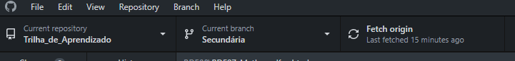
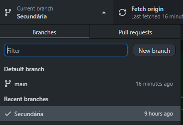
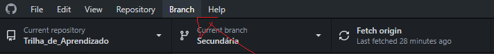
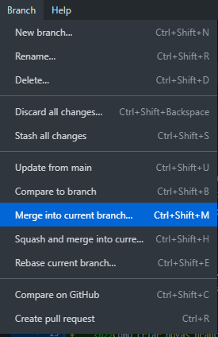
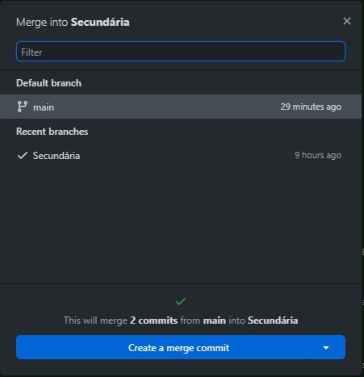
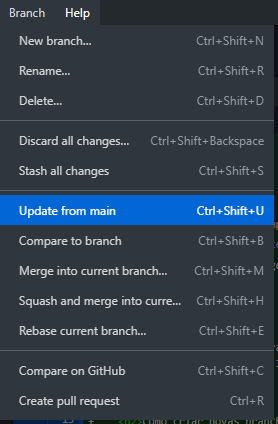

Todo projeto tem seu braço principal que no caso seria a branche main, mas tem como criar outros braços em paralelo para fazer alterações sem mexer diretamente na estrutura main. Isso é muito bom por causa que se uma pessoa ta usando um site e do nada surge uma atualização feita direta da branche main iria causar algum bug no site.
Se vai ir em 'Current branch' e em 'New branch' e por fim da o nome a sua branch e publique no site do GitHub.
 E logo após isso você vai ter que selecionar a branch secundária para poder começar a usa-lá, e por fim para realmente comçar a mexer nela você vai abrir o seu visualstudio com a branch secundária.
Primeiro você vai em 'Branch', depois 'Merge into current branch', e por fim você finaliza selecionando a branche que você vai fazer a junção.
  Quando você tem bastante branches secundárias e depois coloca tudo na branche principal as outras branches não recebem a atualização nelas do conteúdo novo e por isso precisa ser feito isso aqui.
